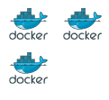

AWS App Mesh
Michal Wojtowicz
michal@wojtowicz.ovh
Live questions
Zaczynamy!
Czym jest service mesh?
Czym jest service mesh?
- kolejn warstw abstrakcji w infrastrukturze
- odpowiada za komunikacj midzy (mikro) serwisami
- niezawodny transfer request贸w
- nie ma znaczenia zożono aplikacji
- load balancing
- service discovery
- security/monitoring
(Sidecar) Proxy
- proxy jako cz serwisu
- może egzystowa jako kontener, we wzorcu sidecar
- proxy raportuje do service mesha sw贸j stan
- komunikacja poprzez proxy
Jak to dziaa?
Jak to dziaa?
- Centrum service mesha kontroluje ruch
- DNS serwer, jako cz infrastruktury
- aktualizowany czsto, propagowany "natychmiast"
Wol mie kontrol...
- weightened routing (Route53)
- weightened balancing (ELB)
- monitoring (CloudWatch)
- auto-replace (healthchecks, auto-scaling)
Open source service meshes
- Consul (Hashicorp)
- Linkerd
- Istio
- Envoy proxy
- Nginx (?)
- haproxy (?)
Envoy proxy
Envoy proxy
- open source
- L3/L4 network proxy
- L7 http proxy
- support HTTP/2
- support gRPC
- support Mongo/DynamoDB w L7
- napisany w C++ 11
Envoy proxy
- tryb "internal"
- upfront proxy
- upfront proxy dziaa podobnie do ALB
Ficzery
- rate limits
- service discovery
- observability
- circuit break
- traffic shifting
- load balancing
Envoy - algorytmy LB
- Weighted round robin
- Weighted least request
- Ring hash
- Maglev
- Random
AWS używa Envoy Proxy w App Mesh
Jak to robi AWS?
Envoy proxy jako sidecar
Elementy logiczne AWS
- Mesh
- Virtual Service
- Virtual Node
- Virtual Router
- Route
Nasza-apka.pl
Nasza-apka.pl
Nasza-apka.pl
Mesh
Granica, wewntrz kt贸rej znajduj si wszystkie (mikro) serwisy naszej infrastruktury
Nasza-apka.pl
Virtual service
- abstrakcja na istniejcy service
- okrela nazw domenow dla service
- okrela, czy za serwisem stoi Node czy Router
Nasza-apka.pl
Virtual Node
- abstrakcja na fizyczny serwis w ramach infrastruktury
- okrela nazw tego "node"
- service discovery method (DNS / AWS Cloud Map)
- definiuje z jakimi serwisami może si komunikowa node
- definiuje healthchecki
- ustawia listenery (port + protok贸))
Nasza-apka.pl
Virtual router
- Zestaw obiekt贸w Route
- Definiuje listener (port + protok贸)
Nasza-apka.pl
Route
- okrela protok贸 na kt贸rym dziaa (HTTP/gRPC/TCP)
- w przypadku HTTP okrela pathname na kt贸rym dziaa
- definiuje VirtualNode, na kt贸ry ma przekierowa ruch
- ma swoj wag
Nasza-apka.pl
Gratis *
* - conditions apply
 /in/wojtowiczmichal
/in/wojtowiczmichal michal@wojtowicz.ovh
michal@wojtowicz.ovh